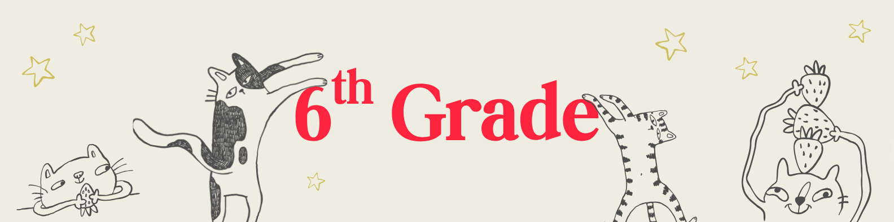

This plan follows an eclectic, interest-led approach that meets 6th grade academic standards while keeping learning joyful and tactile. Every subject is connected to what already lights her up: animals, plants, art, storytelling, and the real world beyond the textbook. Afternoons are her time — unhurried, curious, and self-directed within a gentle structure.
Core belief: when a child can touch it, make it, grow it, or visit it, the learning sticks.
Daily rhythm: Each session opens with a short read-aloud or nature observation (10-15 min), moves into focused lessons, and ends with a hands-on activity or free creative time. Thursdays are reserved for field trips, big projects, nature study, or catch-up.
Sessions run in the afternoon for 3-4 hours over 4 days. Thursday is flexible — used for projects, field trips, or deeper exploration of whatever sparked curiosity that week.
| Day | Time Block | Activities |
|---|---|---|
| Monday | 12:30 – 4:00 |
Language Arts — Read-aloud from current fantasy novel (30 min) Writing — Grammar mini-lesson + writing practice (30 min) Math — New concept lesson with manipulatives or drawings (45 min) Creative Time — Art, craft, or illustration tied to reading (30 min) |
| Tuesday | 12:30 – 4:00 |
Science — Lesson + hands-on experiment or observation (60 min) Math — Practice and review, word problems (40 min) Independent Reading — Fantasy novel with reading journal entry (30 min) |
| Wednesday | 12:30 – 4:00 |
Social Studies — Lesson, map work, or documentary clip (50 min) Language Arts — Essay, narrative, or vocabulary work (40 min) Garden / Nature Study — Observation journal, planting, or pressing (45 min) |
| Thursday | Flexible |
Project / Field Trip Day Rotate through: big hands-on project work · local field trips · nature walk and sketching · co-op or group activities · catch-up or enrichment on any subject |
Reading / Writing / Grammar / Vocabulary
One fantasy novel per quarter where an animal or creature is the main character (see book list). Keep a Reading Journal — 2-3 sentences after each session: what happened, how the creature felt, one question.
6th Grade Core / Hands-On and Real-World
Teach concepts through real-life situations first, then formalize. Use math in her interests whenever possible.
Life and Earth Science / Observation-First
Ancient Civilizations / World Geography
Escape rooms are one of the best project-based learning formats for a hands-on, puzzle-loving learner. Each one turns a unit of study into an immersive challenge — she can solve one you design, or design one herself for someone else to solve (which requires even deeper mastery of the content).
A homeschool escape room is a sequence of puzzles, clues, and challenges where solving each one unlocks the next. The theme and puzzle content are drawn directly from what she's been studying. She can play solo, with a sibling or friend, or with you. Building one herself is the highest-level version — it requires her to truly understand the material in order to write the clues.
Design tip: Start simple — 3 to 4 linked puzzles with a satisfying final reveal. Use lockboxes, envelopes, coded messages, and physical objects. Canva or index cards work great for making clue cards. Jigsaws, invisible ink pens, and combination locks add drama without much expense.
These are the big, memorable projects that anchor each quarter. Most combine multiple subjects at once.
These books are selected for 6th grade reading level with creature main characters. One novel per quarter as the core read; supplemental picks for independent reading anytime.
Thursday is Field Trip Day. These ideas map to subjects being studied each quarter — but go whenever they fit best.
For an eclectic learner, the best assessment tools are the ones she actually enjoys. Mix these approaches across the year: